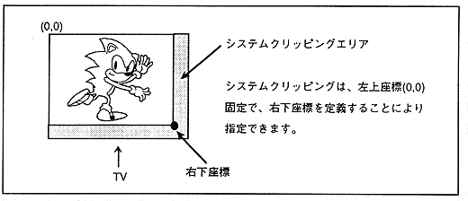

Clipping means clipping (clip) so that it is not drawn in an area other than the set display area. There are two types of clipping: system clipping that sets the system drawing area and user clipping that can be set freely by software.
System clipping
System clipping is always enabled when drawing, and the inside of the set area is drawn (Fig. 3.10).
Figure 3.10 System clipping

User clipping
User clipping can be selected by software, and user clipping can be enabled for each part, or the user clipping effective area can be selected outside or inside the setting area (Fig. 3.11). ).